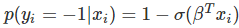

本文主要的目标读者是机器学习爱好者或数据科学的初学者，以及对学习和应用机器学习算法解决实际问题抱有浓厚兴趣的读者。面对大量的机器学习算法，初学者通常会问自己一个典型的问题：「我该使用哪一种算法？」有很多因素会影响这一问题的答案，比如：
- 数据的大小、质量及性质
- 可用计算时间
- 任务的急迫性
- 数据的使用用途
在没有测试过不同算法之前，即使是经验丰富的数据科学家和机器学习算法开发者也都不能分辨出哪种算法性能最好。我们并不提倡一步到位，但是我们确实希望根据一些明确的因素为算法的选择提供一些参考意见。
机器学习算法速查表
机器学习算法速查表可帮助你从大量算法之中筛选出解决你的特定问题的算法，同时本文也将介绍如何使用该速查表。
由于该速查表专门针对数据科学和机器学习的初学者，所以在探讨这些算法之时，我们做了一些简化的假设。本文中所有推荐的算法均来自于程序编译反馈以及若干个数据科学家、机器学习专家和开发者的建议。对于没有达成一致意见的几个问题，我们会着重求同存异。
速查表的使用方法
将阅读速查表上的路径和算法标签读为「如果符合<路径标签>，那么使用<算法>。」例如：
- 如果你想要降维，那么使用主成分分析。
- 如果你需要得到快速的数值型预测，那么使用决策树或 logistic 回归。
- 如果你需要层级结果，那么使用层级聚类。
有时会应用不止一个分支，而有时又找不到一个完美的匹配。重要的是这些路径是基于经验法则的推荐，因此其中一些并不精确。很多数据科学家说找到最佳算法的唯一确定方法就是尝试所有算法。
机器学习算法的分类
这一章节将对最流行的机器学习分类做一个概览，如果你对这些分类很熟悉，可直接跳至下文「什么时候使用具体算法」这一节。
监督学习
监督学习算法基于一组样本对作出预测。例如，以往销售业绩可以用来预测未来的价格走势。借助监督学习，我们会有一组由标注训练数据组成的输入变量和一组希望预测的输出变量。我们可以使用算法分析训练数据来学习一个将输入映射到输出的函数。算法推断的函数可通过概括训练数据预测未知情景中的结果进而预测未知的新实例。
- 分类：当数据被用于预测类别时，监督学习也可处理这类分类任务。给一张图片贴上猫或狗的标签就是这种情况。当分类标签只有两个时，这就是二元分类；超过两个则是多元分类。
- 回归：当预测为连续数值型时，这就是一个回归问题。
- 预测：这是一个基于过去和现在的数据预测未来的过程，其最大应用是趋势分析。一个典型实例是根据今年和前年的销售业绩以预测下一年的销售业绩。
半监督学习
监督学习的主要挑战是标注数据价格昂贵且非常耗时。如果标签有限，你可以使用非标注数据来提高监督学习。由于在这一情况中机器并非完全有监督，所以称之为半监督。通过半监督学习，你可以使用只包含少量标注数据的非标注实例提升学习精确度。
无监督学习
在无监督学习之中，机器完全采用非标注数据，其被要求发现隐藏在数据之下的内在模式，比如聚类结构、低维流形或者稀疏树和图。
- 聚类：把一组数据实例归为一类，从而一个类（一个集群）之中的实例与其他类之中的实例更相似（根据一些指标），其经常被用于把整个数据集分割为若干个类。这种分析可在每一分类之中进行，从而帮助用户需要内在模式。
- 降维：减少考虑的变量数量。在很多应用中，原始数据有非常高的特征维度，并且一些特征是多余的且与任务不相关。降维将有助于发现真实、潜在的关系。
强化学习
基于来自环境的反馈，强化学习分析和优化智能体的行为。机器尝试不同的策略，从而发现哪种行为能产生最大的回报，因此智能体不是被告知应该采取哪种行为。试错和延迟的 reward 是将强化学习与其他技术区分的特点。
选择算法的注意事项
当选择一个算法的时候，你要时刻牢记如下方面：精确性、训练时间和易用性。很多用户将精确性置于首位，然而新手则倾向于选择他们最了解的算法。
当你有一个数据集后，第一件需要考虑的事情就是如何获得结果，无论这些结果可能会多么奇怪。新手倾向于选择易于实现且能快速获得结果的算法。这种思路仅在整个训练的第一步过程中适用。一旦你获得了一些结果并且开始逐渐熟悉数据，你或许应该花更多时间，使用更加复杂的算法来强化你对数据的理解，这样方可改进结果。
不过，即便到了这一步，达到最高精度的标准算法也可能不是最合适的算法，这是因为一个算法通常需要用户细致的调参以及大范围的训练才能获得其最佳性能。
选择具体算法的场景
对具体算法的深入研究可以帮助你理解它们的能力以及使用的方式。下面更多细节可为你选择具体算法提供进一步帮助，你可以配合前面速查表一起阅读。
线性回归和 Logistic 回归
线性回归（linear regression）是一种对连续型因变量 y 与单个或多个特征 X 之间的关系进行建模的方法。y 和 X 之间的关系可被线性建模成 如下形式：当存在训练样本时，，参数向量β可从训练样本中学到。
如果因变量不连续且为类别，那么线性回归可以转为使用一个 Sigmoid 函数的 logistic 回归。logistic 回归是一种简便，快速而且强大的分类算法。这里讨论二值情况，即因变量 y 只有两个值 y∈(−1,1)（这可以很容易被扩展为多类分类问题）。
在 logistic 回归中，我们使用不同的假设类别来尝试预测一个给定样例是属于「1」类还是「-1」类的概率。具体而言，我们将尝试学习如下形式的一个函数：以及，其中
是一个 sigmoid 函数。当存在训练样本 {xi，yi} 时，参数向量β能在给定数据集下，最大化 β 对数似然值来学习。
线性 SVM 和核 SVM
核（kernel）技巧可被用于将非线性可分函数映射成高维的线性可分函数。支持向量机（SVM）训练算法可以找到由超平面的法向量 w 和偏置项 b 表示的分类器。这个超平面（边界）可以按照最大间隔的方式来分开不同的类别。这个问题可以被转换一个条件优化问题：
Kernel 技巧被用于将非线性可分函数映射成高维的线性可分函数
当类别不是线性可分的时候，核技巧可被用于将非线性可分空间映射到高维的线性可分空间。
当因变量不是数值型时，logistic 回归和 SVM 应该被用作分类的首要尝试。这些模型可以轻松实现，它们的参数易于调节，而且其性能也相当好。所以这些模型非常适合初学者。
树和集成树
用于预测模型的决策树
决策树、随机森林和梯度提升（gradient boosting）全都是基于决策树的算法。决策树有很多变体，但它们所做的事情都一样——将特征空间细分为基本具有相同标签的区域。决策树易于理解和实现。但是，它们往往会过拟合数据，并且在树上面走得非常深。随机森林和梯度提升是两种流行的使用树算法来实现良好准确度的集成方法，该两种集成方法同时还能克服过拟合的问题。
神经网络和深度学习
一个卷积神经网络架构
神经网络凭借其并行和分布式处理的能力而在 1980 年代中期兴起。但该领域的研究受到了反向传播训练算法的低效性的阻碍，而反向传播算法在神经网络参数的优化上得到了广泛的应用。支持向量机（SVM）和其它更简单的模型（可以通过解决凸优化问题而轻松训练）逐渐在机器学习领域替代的神经网络。
在最近几年，无监督预训练和层次方式的贪婪训练等新的和改进过的训练技术导致了人们对神经网络的兴趣的复兴。逐渐增强的计算能力（比如 GPU 和大规模并行处理（MPP））也促进了神经网络的复兴。神经网络研究的复兴已经为我们带来了数千层的模型。
一种神经网络
换句话说，浅层神经网络已经发展成了深度学习神经网络。深度神经网络已经在监督学习领域取得了巨大的成功。当被用于语音识别和图像识别，深度学习的水平已经达到甚至超过了人类水平。当被应用于无监督学习任务（比如特征提取）时，深度学习也可以从原始图像和语音中提取出特征，且仅需要非常少的人类干预。
神经网络由 3 个部分组成：输入层、隐藏层和输出层。当输出层是一个分类变量时，那么该神经网络可以解决分类问题。当输出层是一个连续变量时，那么该网络可被用于执行回归。当输出层和输入层一样时，该网络可被用于提取内在的特征。隐藏层的数量定义了模型复杂度和建模能力。
k-均值/k-模式、高斯混合模型（GMM）聚类
k-均值聚类
高斯混合模型
k-均值/k-模式，GMM 聚类的目标是将 n 个观察分区成 k 个集群。k-均值聚类定义为硬分配标准：其样本会被而且仅可被分配给一个集群。然而，GMM 可以为每个样本定义一个软分配（soft assignment）。每个样本都有一个与每个集群相关的概率。当给定了集群的数量 k 时，这两个算法都很简单快速。
DBSCAN
DBSCAN 示意图
当聚类的数量 k 给定时，可以通过密度扩散（density diffusion）来连接样本，从而使用 DBSCAN（基于密度的空间聚类（density-based spatial clustering））。
层次聚类

层次分区可以使用树结构（树形图）来进行可视化。其不需要集群的数量作为输入，且其分区可以使用不同的 K 而在不同的粒度水平下查看（即可以细化/粗化集群）。
PCA、SVD 和 LDA
我们通常并不想直接给机器学习算法送入大量特征，因为一些特征可能是无关的或者「固有的（intrinsic）」的维度可能少于特征的数量。主成分分析（PCA）、奇异值分解（Singular Value Decomposition）和隐狄利克雷分布（LDA）都可以被用于执行降维。
PCA 是一种无监督聚类方法，其可以将原有的数据空间映射到一个更低维的空间，同时还能保留尽可能多的信息。PCA 基本上是在寻找一个保留了最大数据方差的子空间，且该子空间由数据的协方差矩阵的主要特征向量所定义。
SVD 和 PCA 有某种程度的联系——中心数据矩阵的 SVD（特征 vs. 样本）能提供定义由 PCA 所找到的同样子空间的主左奇异向量（dominant left singular vectors）。但是，SVD 是一种更加通用的技术，因为其也能做一些 PCA 可能做不到的事情。比如，一个用户 vs. 电影矩阵的 SVD 可以提取用户资料和电影资料，然后将其用在推荐系统中。此外，SVD 也被广泛用作主题建模工具，在自然语言处理领域被称为潜在语义分析。
自然语言处理领域的一个相关技术是隐狄利克雷分布（LDA）。LDA 是概率主题模型，其可以将文档分解为主题，分解方式就像高斯混合模型（GMM）将连续数据分解成高斯密度（Gaussian densities）。不同于 GMM，LDA 建模的是离散数据（文档中的词），并且会限制其主题以按狄利克雷分布而先验地分布。
结论
这是一个易于掌握的工作流程。当你在尝试一个新问题时，其中的关键信息是：
- 定义问题。你想要解决什么问题？
- 从简单开始。熟悉你的数据和基准结果。
- 然后尝试更加复杂的东西。
No comments yet.